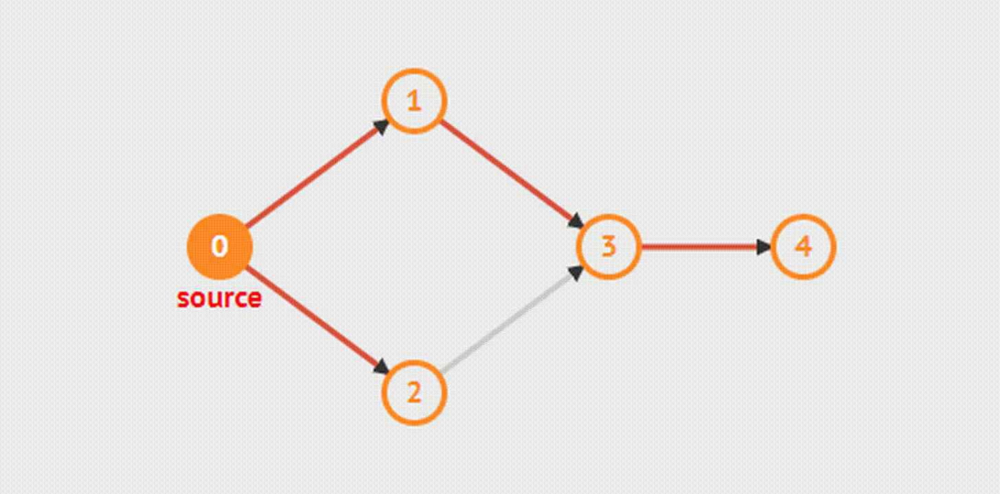

Поиск в ширину (обход в ширину, breadth-first search) — это один из основных алгоритмов на графах.
В результате поиска в ширину находится путь кратчайшей длины в невзвешенном графе, т.е. путь, содержащий наименьшее число рёбер.
Алгоритм работает за O (n+m), где n — число вершин, m — число рёбер.
Описание алгоритма
На вход алгоритма подаётся заданный граф (невзвешенный), и номер стартовой вершины s. Граф может быть как ориентированным, так и неориентированным, для алгоритма это не важно.
Сам алгоритм можно понимать как процесс "поджигания" графа: на нулевом шаге поджигаем только вершину s. На каждом следующем шаге огонь с каждой уже горящей вершины перекидывается на всех её соседей; т.е. за одну итерацию алгоритма происходит расширение "кольца огня" в ширину на единицу (отсюда и название алгоритма).
Более строго это можно представить следующим образом. Создадим очередь q, в которую будут помещаться горящие вершины, а также заведём булевский массив used[], в котором для каждой вершины будем отмечать, горит она уже или нет (или иными словами, была ли она посещена).
Изначально в очередь помещается только вершина s, и used[s] = true, а для всех остальных вершин used[] = false. Затем алгоритм представляет собой цикл: пока очередь не пуста, достать из её головы одну вершину, просмотреть все рёбра, исходящие из этой вершины, и если какие-то из просмотренных вершин ещё не горят, то поджечь их и поместить в конец очереди.
В итоге, когда очередь опустеет, обход в ширину обойдёт все достижимые из s вершины, причём до каждой дойдёт кратчайшим путём. Также можно посчитать длины кратчайших путей (для чего просто надо завести массив длин путей d[]), и компактно сохранить информацию, достаточную для восстановления всех этих кратчайших путей (для этого надо завести массив "предков" p[], в котором для каждой вершины хранить номер вершины, по которой мы попали в эту вершину).
Приложения алгоритма
Поиск кратчайшего пути в невзвешенном графе.
Поиск компонент связности в графе за O(n+m).
Для этого мы просто запускаем обход в ширину от каждой вершины, за исключением вершин, оставшихся посещёнными used=true после предыдущих запусков. Таким образом, мы выполняем обычный запуск в ширину от каждой вершины, но не обнуляем каждый раз массив used[], за счёт чего мы каждый раз будем обходить новую компоненту связности, а суммарное время работы алгоритма составит по-прежнему O(n+m) (такие несколько запусков обхода на графе без обнуления массива used называются серией обходов в ширину).
Нахождения решения какой-либо задачи (игры) с наименьшим числом ходов, если каждое состояние системы можно представить вершиной графа, а переходы из одного состояния в другое — рёбрами графа.
Классический пример — игра, где робот двигается по полю, при этом он может передвигать ящики, находящиеся на этом же поле, и требуется за наименьшее число ходов передвинуть ящики в требуемые позиции.
Решается это обходом в ширину по графу, где состоянием (вершиной) является набор координат: координаты робота, и координаты всех коробок.
Нахождение кратчайшего пути в 0-1-графе (т.е. графе взвешенном, но с весами равными только 0 либо 1): достаточно немного модифицировать поиск в ширину: если текущее ребро нулевого веса, и происходит улучшение расстояния до какой-то вершины, то эту вершину добавляем не в конец, а в начало очереди.
Нахождение кратчайшего цикла в ориентированном невзвешенном графе: производим поиск в ширину из каждой вершины; как только в процессе обхода мы пытаемся пойти из текущей вершины по какому-то ребру в уже посещённую вершину, то это означает, что мы нашли кратчайший цикл, и останавливаем обход в ширину; среди всех таких найденных циклов (по одному от каждого запуска обхода) выбираем кратчайший.
Найти все рёбра, лежащие на каком-либо кратчайшем пути между заданной парой вершин (a,b). Для этого надо запустить 2 поиска в ширину: из a, и из b. Обозначим через d_a[] массив кратчайших расстояний, полученный в результате первого обхода, а через d_b[] — в результате второго обхода. Теперь для любого ребра (u,v) легко проверить, лежит ли он на каком-либо кратчайшем пути: критерием будет условие d_a[u] + 1 + d_b[v] = d_a[b].
Найти все вершины, лежащие на каком-либо кратчайшем пути между заданной парой вершин (a,b). Для этого надо запустить 2 поиска в ширину: из a, и из b. Обозначим через d_a[] массив кратчайших расстояний, полученный в результате первого обхода, а через d_b[] — в результате второго обхода. Теперь для любой вершины v легко проверить, лежит ли он на каком-либо кратчайшем пути: критерием будет условие d_a[v] + d_b[v] = d_a[b].
Найти кратчайший чётный путь в графе (т.е. путь чётной длины). Для этого надо построить вспомогательный граф, вершинами которого будут состояния (v,c), где v — номер текущей вершины, c = 0...1 — текущая чётность. Любое ребро (a,b) исходного графа в этом новом графе превратится в два ребра ((u,0),(v,1)) и ((u,1),(v,0)). После этого на этом графе надо обходом в ширину найти кратчайший путь из стартовой вершины в конечную, с чётностью, равной 0.
Реализация
Реализуем вышеописанный алгоритм на языке C++.
Входные данные:
vector < vector<int> > g; // граф
int n; // число вершин
int s; // стартовая вершина (вершины везде нумеруются с нуля)
// чтение графа
...
Сам обход:
queue<int> q;
q.push (s);
vector<bool> used (n);
vector<int> d (n), p (n);
used[s] = true;
p[s] = -1;
while (!q.empty()) {
int v = q.front();
q.pop();
for (size_t i=0; i<g[v].size(); ++i) {
int to = g[v][i];
if (!used[to]) {
used[to] = true;
q.push (to);
d[to] = d[v] + 1;
p[to] = v;
}
}
}
Если теперь надо восстановить и вывести кратчайший путь до какой-то вершины to, это можно сделать следующим образом:
if (!used[to])
cout << "No path!";
else {
vector<int> path;
for (int v=to; v!=-1; v=p[v])
path.push_back (v);
reverse (path.begin(), path.end());
cout << "Path: ";
for (size_t i=0; i<path.size(); ++i)
cout << path[i] + 1 << " ";
}
